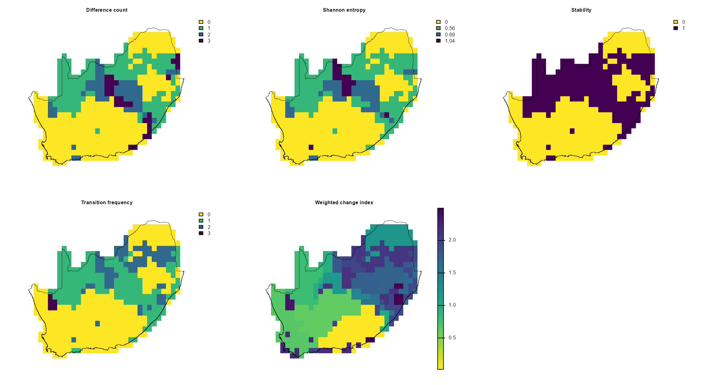
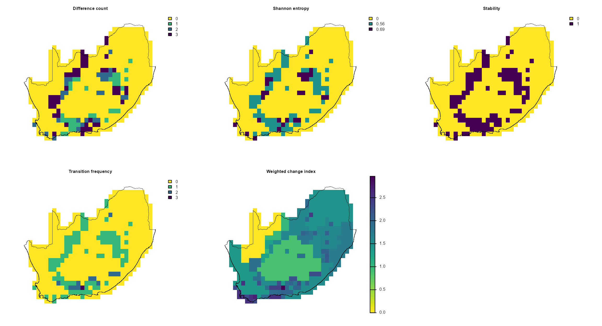

dissmapr
Assessing Current-to-Future Biodiversity Change
This vignette compares current and future spatial patterns in
biodiversity composition. It illustrates how dissmapr
outputs can be used to explore potential compositional change, including
shifts in predicted community similarity and bioregional structure.
To keep the example reproducible and quick to run, we use a small set
of example objects bundled with dissmapr. The setup chunk
below loads the required packages, reads the bundled data snapshot, and
loads the current and future raster layers needed for the
change-analysis examples.
# Load the packages used in this vignette.
library(dissmapr)
library(viridis)
library(terra)
# Load the bundled example data snapshot.
inputs = readRDS(system.file("extdata", "dissmapr_vignettes.rds", package = "dissmapr"))
# Unpack the example objects used below.
rsa = inputs$rsa # South Africa boundary
grid_spp = inputs$grid_spp # Grid-level species data
sp_cols = inputs$sp_cols # Species column names
# Recreate/load the raster layers used in the spatial comparisons.
grid_masked = terra::mask(
terra::setValues(
terra::rast(system.file("extdata", "grid_r.tif", package = "dissmapr"))[[1]],
1
),
terra::vect(rsa)
)
future_nn = terra::rast(system.file("extdata", "future_nn.tif", package = "dissmapr"))
current_nn = terra::rast(system.file("extdata", "current_nn.tif", package = "dissmapr"))
future_hclt = terra::rast(system.file("extdata", "future_hclt.tif", package = "dissmapr"))1. Map sensitivity of bioregion delineation to clustering method
using map_bioregDiff()
In the sections below we use map_bioregDiff() to assess
how much our four clustering algorithms disagree (a sensitivity check).
Here we treat the various cluster maps generated with
map_bioreg() (k-means, PAM, hierarchical and GMM) as a
sensitivity analysis. By feeding all four algorithm outputs into
map_bioregDiff(), we quantify where and how much those
methods disagree. This shows which areas are robust to algorithm choice
and which are method‐dependent.
Change-metric options in map_bioregDiff()
include (approach argument):
-
difference_count: counts how many times a cell’s
label deviates from the first layer.
-
shannon_entropy: Shannon entropy of the label
sequence, a measure of within-cell diversity.
-
stability: proportion of layers in which the label
is unchanged (1 = always stable, 0 = always different).
-
transition_frequency: total number of label flips
between consecutive layers, showing how often change occurs.
-
weighted_change_index: cumulative change weighted
by a dissimilarity matrix so rare or large transitions score
higher.
-
all (default): returns a five-layer
SpatRastercontaining every metric.
# Get current nn rasters
# current_nn = c(bioreg_current$nn$current$kmeans_algn_current,
# bioreg_current$nn$current$pam_algn_current,
# bioreg_current$nn$current$hclust_algn_current,
# bioreg_current$nn$current$gmm_algn_current)
names(current_nn)
#> [1] "kmeans_algn_current" "pam_algn_current" "hclust_algn_current"
#> [4] "gmm_algn_current"
# Run `map_bioregDiff`
# 'approach', specifies which metric to compute:
sens_bioregDiff = dissmapr::map_bioregDiff(
current_nn,
approach = "all"
)
# Inspect the output layers
sens_bioregDiff
#> class : SpatRaster
#> size : 25, 32, 5 (nrow, ncol, nlyr)
#> resolution : 0.5, 0.4999984 (x, y)
#> extent : 16.75, 32.75, -34.75, -22.25004 (xmin, xmax, ymin, ymax)
#> coord. ref. : lon/lat WGS 84 (EPSG:4326)
#> source(s) : memory
#> varnames :
#>
#>
#> current_nn
#>
#> names : Differ~_Count, Shanno~ntropy, Stability, Transi~quency, Weight~_Index
#> min values : 0, -0, 0, 0, 0.016949
#> max values : 3, 1.039721, 1, 3, 2.990113
# Crop to our study area and prepare for plotting
mask_sens_bioregDiff = terra::mask(
terra::resample(sens_bioregDiff, grid_masked, method = "near"),
grid_masked
)
# Quick visual QC in a 2-row x 3-column layout
old_par = par(mfrow = c(2, 3), mar = c(1, 1, 1, 5))
titles = c("Difference count", "Shannon entropy", "Stability",
"Transition frequency", "Weighted change index")
for (i in seq_along(titles)) {
plot(mask_sens_bioregDiff[[i]],
col = viridis(100, direction = -1),
colNA = NA,
axes = FALSE,
main = titles[i],
cex.main = 0.8)
plot(terra::vect(rsa), add = TRUE, border = "black", lwd = 0.4)
}
par(old_par)
2. Map bioregion sensitivity to future change using
map_bioregDiff()
Here we use map_bioregDiff() to track how the
hierarchical‐cluster map itself changes under three future climate
scenarios. Focusing solely on the hierarchical solution we map bioregion
change across time. First we stack the hierarchical clusters for today,
2030, 2040 and 2050, run map_bioregDiff() on that series,
and highlight how bioregions shift under these future climate
projections. In this way we isolate climate-driven reorganization in the
hierarchical map itself.
# 1. Build a multi‐layer SpatRaster of hierarchical clusters for each scenario
# Create SpatRast
# future_hclt = c(bioreg_future$nn$current$hclust_current,
# bioreg_future$nn$`2030`$hclust_2030,
# bioreg_future$nn$`2040`$hclust_2040,
# bioreg_future$nn$`2050`$hclust_2050)
names(future_hclt)
#> [1] "hclust_current" "hclust_2030" "hclust_2040" "hclust_2050"
# 2. Compute change metrics across those four layers
future_bioregDiff = dissmapr::map_bioregDiff(future_hclt, approach = "all")
# 3. Mask to your RSA boundary (assuming 'grid_masked' is your template)
mask_future_bioregDiff = terra::mask(
terra::resample(future_bioregDiff, grid_masked, method = "near"),
grid_masked
)
# 4. Plot all five metrics in a 2-row x 3-column panel
old_par = par(mfrow = c(2, 3), mar = c(1, 1, 1, 5))
titles = c(
"Difference count",
"Shannon entropy",
"Stability",
"Transition frequency",
"Weighted change index"
)
for (i in seq_along(titles)) {
plot(
mask_future_bioregDiff[[i]],
# col = viridisLite::turbo(100),
col = viridis(100, direction = -1),
colNA = NA,
axes = FALSE,
main = titles[i],
cex.main = 0.8
)
plot(terra::vect(rsa), add = TRUE, border = "black", lwd = 0.4)
}
par(old_par)
sessionInfo()
#> R version 4.5.2 (2025-10-31 ucrt)
#> Platform: x86_64-w64-mingw32/x64
#> Running under: Windows 11 x64 (build 26200)
#>
#> Matrix products: default
#> LAPACK version 3.12.1
#>
#> locale:
#> [1] LC_COLLATE=English_South Africa.utf8 LC_CTYPE=English_South Africa.utf8
#> [3] LC_MONETARY=English_South Africa.utf8 LC_NUMERIC=C
#> [5] LC_TIME=English_South Africa.utf8
#>
#> time zone: Africa/Johannesburg
#> tzcode source: internal
#>
#> attached base packages:
#> [1] stats graphics grDevices datasets utils methods base
#>
#> other attached packages:
#> [1] terra_1.9-34 viridis_0.6.5 viridisLite_0.4.3 dissmapr_0.2.0
#>
#> loaded via a namespace (and not attached):
#> [1] DBI_1.3.0 pbapply_1.7-4 geodata_0.6-9
#> [4] pROC_1.19.0.1 gridExtra_2.3.1 permute_0.9-10
#> [7] rlang_1.2.0 magrittr_2.0.5 otel_0.2.0
#> [10] e1071_1.7-17 compiler_4.5.2 mgcv_1.9-4
#> [13] systemfonts_1.3.2 vctrs_0.7.3 maps_3.4.3
#> [16] reshape2_1.4.5 stringr_1.6.0 pkgconfig_2.0.3
#> [19] fastmap_1.2.0 rmarkdown_2.31 prodlim_2026.03.11
#> [22] ragg_1.5.2 purrr_1.2.2 xfun_0.59
#> [25] cachem_1.1.0 jsonlite_2.0.0 recipes_1.3.3
#> [28] parallel_4.5.2 cluster_2.1.8.2 R6_2.6.1
#> [31] bslib_0.11.0 stringi_1.8.7 RColorBrewer_1.1-3
#> [34] parallelly_1.47.0 rpart_4.1.27 estimability_1.5.1
#> [37] lubridate_1.9.5 jquerylib_0.1.4 Rcpp_1.1.1-1.1
#> [40] iterators_1.0.14 knitr_1.51 future.apply_1.20.2
#> [43] fields_17.3 zoo_1.8-15 Matrix_1.7-5
#> [46] splines_4.5.2 nnet_7.3-20 timechange_0.4.0
#> [49] tidyselect_1.2.1 rstudioapi_0.19.0 yaml_2.3.12
#> [52] vegan_2.7-5 timeDate_4052.112 codetools_0.2-20
#> [55] listenv_1.0.0 lattice_0.22-9 tibble_3.3.1
#> [58] plyr_1.8.9 withr_3.0.3 S7_0.2.2
#> [61] geosphere_1.6-8 evaluate_1.0.5 sf_1.1-1
#> [64] future_1.70.0 desc_1.4.3 survival_3.8-6
#> [67] units_1.0-1 proxy_0.4-29 mclust_6.1.2
#> [70] pillar_1.11.1 KernSmooth_2.23-26 corrplot_0.95
#> [73] renv_1.1.4 foreach_1.5.2 stats4_4.5.2
#> [76] generics_0.1.4 zetadiv_1.3.0 ggplot2_4.0.3
#> [79] scales_1.4.0 xtable_1.8-8 globals_0.19.1
#> [82] class_7.3-23 glue_1.8.1 clValid_0.7
#> [85] emmeans_2.0.3 tools_4.5.2 data.table_1.18.4
#> [88] ModelMetrics_1.2.2.2 gower_1.0.2 mvtnorm_1.4-1
#> [91] fs_2.1.0 dotCall64_1.2 grid_4.5.2
#> [94] tidyr_1.3.2 ipred_0.9-15 nlme_3.1-169
#> [97] patchwork_1.3.2 cli_3.6.6 rappdirs_0.3.4
#> [100] textshaping_1.0.5 NbClust_3.0.1 spam_2.11-4
#> [103] scam_1.2-22 lava_1.9.1 dplyr_1.2.1
#> [106] gtable_0.3.6 sass_0.4.10 digest_0.6.39
#> [109] classInt_0.4-11 caret_7.0-1 ggrepel_0.9.8
#> [112] htmlwidgets_1.6.4 farver_2.1.2 entropy_1.3.2
#> [115] htmltools_0.5.9 pkgdown_2.2.0 lifecycle_1.0.5
#> [118] factoextra_2.0.0 hardhat_1.4.3 httr_1.4.8
#> [121] MASS_7.3-65